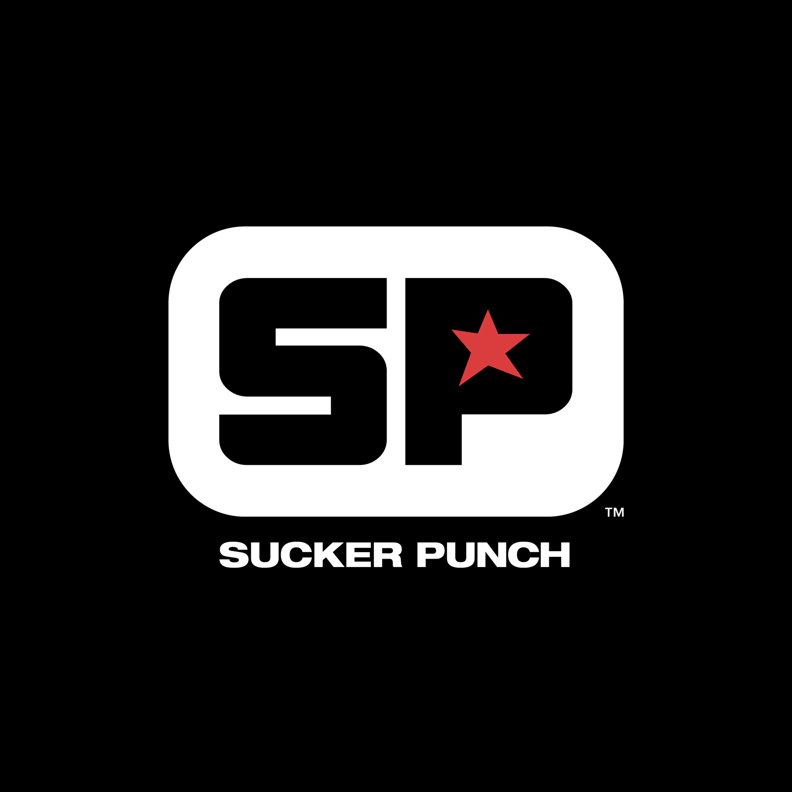

|  |  |
Contact Assistance |
À propos | Connexion |  |
|
|---|---|---|---|---|---|---|
 |
 |
Notre but dans ce projet est de faire un site
promotionnel sur le jeu vidéo « Ghost of
Tsushima ». Nous présentons à quoi le jeu consiste et à quoi s’attendre comme
expérience. Nous nous sommes inspirés de
divers site web qui font une promotion du
jeu et avons utilisés les informations fournis
pour créer un site web unique où on peut
retrouver un bon guidage et une bonne
utilisabilité.
https://www.playstation.com/fr-ca/games/ghost-of-tsushima/:
Ceci est le lien pour acheter le jeu directement sur le site
PlayStation. On l’a choisi puisque c’est le site officiel de
l’éditeur du jeu. Le site nous a aussi inspirer pour choisir le
bon mélange de couleur qui vont avec les esthétiques du jeu.
La bande de couleur or au-dessus de la barre de navigation
est inspirée par la couleur de la bande venant du lien qui est
en arrière-plan de l’image du personnage principal et le titre
du jeu. Le site officiel nous donne aussi accès à une
définition du jeu plus profonde et aux diverses informations
ce que le jeu contient. En vous dirigeant sur le lien vous aurez
accès aux prix de la version régulière du jeu, les plateformes
où il est accessible et des photos prises sur l’une des plateformes
du jeu, la PS5. Nous faisons confiance ce site
web, car c’est celui de Sony, une compagnie très connue et
fiable.
https://www.shadowofwar.com/fr/about/
Le lien ci-dessus amené au site web
promotionnel du jeu « L’ombre de la Guerre ».
Ce site à servit à deux différents objectifs
dans notre projet. Premièrement, être un site
conçu pour un jeu vidéo précis. En affirmant
qu’il y a des sites web fait précisément à la
promotion d’un jeu vidéo, nous pouvons
continuer en sachant que notre projet
pourrait est une idée réaliste.
Deuxièmement, l’esthétique du site. Nous
nous sommes à la cohésion entre le texte et
les images. Comment faire qu’un texte
d’information ne ruine pas la photo liée à
celui-ci.
Sean-Andrew Baptiste, 2389938: J’étais le responsable
pour la page « à propos » et la page « extra ». Selon moi,
l’un des meilleurs sujets à parler sur le jeu « Ghost of
Tsushima » est le visuel, donc je voulais une grande
présence d’image pris directement du jeu dans la page « à
propos ». Le grand enjeu que j’ai dans ce projet est de
trouver quoi faire pour la page extra. J’ai décidé dans faire
une gallérie pour encore une fois montrer à quelle point ce
jeu peut être beau.
Alexis Messier, 2381036: J’étais le responsable des pages
«Acceuil» et «Contact». Comme Sean, je pense que les
graphiques du jeu est un de ses meilleurs aspects, traduire
cette beauté est difficile quand nous faisions se prototype.
Ma solution était de faire des boites de texte transparente.
Le défi que j’ai eu étais la page «Contact» car nous avons
décidés de faire un formulaire d’aide à la clientèle, trouver
des idées de questions mon bloqué pendant plus longtemps
que nécessaire.